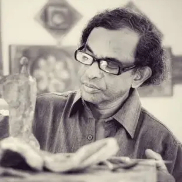

Nawi Samaranayake

In 2019 Anoma exhibited at the European Cultural Centre at the Palazzo Bembo during the 58th Venice Biennale and in 2016 at Sotheby’s Hong Kong Gallery. International solo shows include those in Sydney, Kuala Lumpur, New Delhi, Maldives, Dubai and London. Anoma studied and worked in the UK for three decades as a designer and artist and now divides her time between London and Sri Lanka where her studio is now based. Recent exhibitions combine poetry and science to explore sustainability and the environment. Often suggestive and poetic in appeal, works range from mixed media paintings on canvas and paper to iPad and digital art, video and sculpture installations. They invite multiple interpretations, and are abstract reflections upon isolation, transformation, reconciliation, healing and the freedom of the human spirit. ‘Human insecurities, greed and conflicts blur the boundaries between reason and passion and explode the tensions that exist within all of us. We create and destroy in our search for immortality, never accepting life’s unalterable fact – impermanence.’ Anoma currently works exclusively on her paintings and installations. Creating images that depict man’s existential anxieties, contemporary concerns about the human condition and internal tussle with his nature and his fellow man. The works are layered and dense, exploring the relationship between surface and depth and that that is sought and found through destruction and loss. Her technique of layering and juxtaposition of elemental content also mirrors the interplay between time and nature. Boats, rivers, crevices, figures and pathways are both summoned up and woven into the background, fractured, left to emerge on longer investigation. Her multimedia trilingual installation on reconciliation, which incorporated writings on peace, music, performance and video, was shown in the National Gallery of Sri Lanka. Anoma’s designs have been displayed at the V&A Museum and the House of Commons in London and been shown in the USA, Japan and Europe. Clients have included Yves St Laurent, Pierre Cardin, Calvin Klein and Ralph Lauren, and been featured in several international publications including the cover of Vogue Magazine in the UK. She was also one of the painters selected by India for the SAARC art Exhibition which toured the 7 capitals of the SAARC region. Anoma was a visiting lecturer for over ten years at several British art Colleges including at her alma mater, Central St Martins College, University of the Arts, London.

ART 1

ART 2